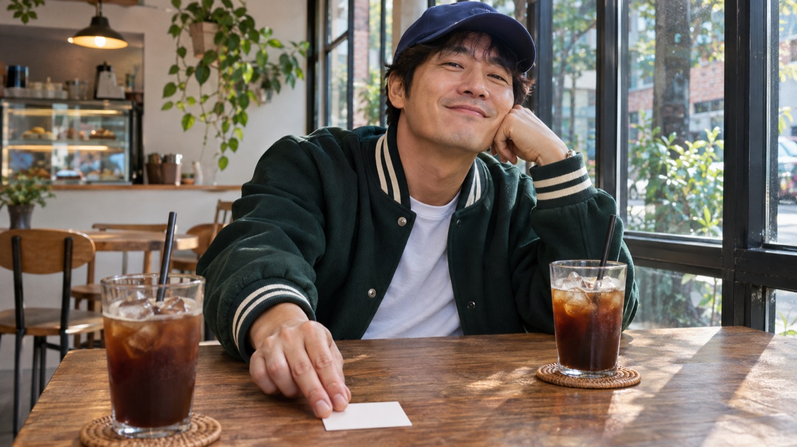

0 / 8턴

민수의 사진 · 동네 카페
어제는 그냥 동호회 지인이었는데.
민수에게
톡이 왔어요.
말 속의 단서를 기억하고, 답장을 골라
혼자 시작한 썸에서 빠져나오세요.
등장인물은 모두 가상의 성인입니다.
민수개인 대화
- 진행
- 호감도

민수의 사진 · 동네 카페
어제는 그냥 동호회 지인이었는데.
말 속의 단서를 기억하고, 답장을 골라
혼자 시작한 썸에서 빠져나오세요.
등장인물은 모두 가상의 성인입니다.